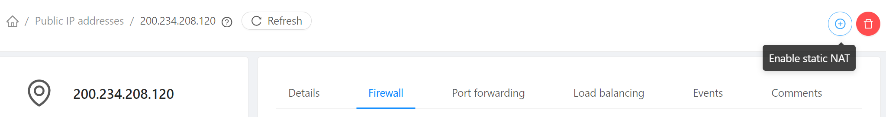

Compute e Networking
Login
Para começar, acesse o painel do CloudStack e forneça as credenciais que recebeu.
Chaves SSH
Para poder logar-se nas instâncias, crie um chave SSH e cadastre-a no painel.
- No menu de navegação à esquerda clique em Compute, SSH key pairs
- Clique no botão Create a SSH Key Pair +
- Verifique se possui a chave criada no seu computador:
Caso ainda não possua, para criá-la:
cat ~/.ssh/id_rsa.pubssh-keygen cat ~/.ssh/id_rsa.pub
Copie todas as linhas de saída do comando cat e cole no campo Public key. Escolha um nome como minha-chave e clique OK.

Rede
Usualmente como em clouds públicas, as instâncias são instaladas em redes com endereços IP privados (exemplo 10.x.x.x) e acessadas via port forwarding ou load balancing.
A rede que você criará ficará totalmente isolada de todas as demais redes de outros clientes, sendo possível a comunicação somente através da saída por IPs públicos e desde que permitida por regras de firewall.
Para criar a rede:
- No menu de navegação à esquerda clique em Network, Guest networks
- Clique no botão Add network +
- Em name coloque um nome como minha-rede
- Em Network offering escolha
ISOLATED Network VXLAN with Single VR - Os demais campos podem ficar em branco. Clique OK.
Criando a instância
- No menu de navegação à esquerda clique em Compute, Instances
- Clique no botão Add instance +
- Em Templates, escolha Community, digite ubuntu na busca e escolha Ubuntu Server 22.04
- Em Compute offering escolha micro
- Em Data disk mantenha No thanks
- Em Networks escolha a rede que criou, minha-rede
- Em SSH key pairs escolha a chave criada no passo anterior, por exemplo, minha-chave

- Coloque o nome web e clique Launch instance

Conectando à internet
Para que a instância criada possa se comunicar com o mundo externo, os próximos passos são:
- Criar regras de firewall restringindo a conexão a origens específicas
- Associar um endereço IP público e porta via Static NAT
Firewall
- No menu de navegação à esquerda clique em Network, Guest networks e clique na rede criada, ex. minha-rede
- Ao clicar na aba Egress rules pode-se verificar se o tráfego de saída para a internet é, ou não, liberado por padrão. Caso a política (default egress policy) seja Allow já está liberado e siga para o próximo passo. Se estiver como Deny devemos liberar o tráfego de saída:
- Na aba Public IP addresses vemos que já há um primeiro IP associado e marcado como source-nat. Isto indica que tráfego originado de dentro da rede para a internet terá este IP como origem.

- No menu à esquerda acesse Networks, Guest networks, minha-rede, Public IP addresses e clique + Acquire new IP. Escolha qualquer IP livre.

- Clique sobre o novo IP escolhido (exemplo:
200.234.208.120). Clique na aba Firewall e crie as seguintes regras:- Source CIDR: 0.0.0.0/0; Start port: 80; End port: 80 (para aceitar conexões HTTP)
- Source CIDR: 0.0.0.0/0; Start port: 443; End port: 443 (para aceitar conexões HTTPS)
- Source CIDR: 0.0.0.0/0; Start port: 22; End port: 22 (para aceitar conexões SSH).
- Source CIDR: 0.0.0.0/0; Protocol: ICMP (para testarmos ping).
Info
Poderíamos restringir origens para cada uma dessas portas. Por exemplo, poderíamos permitir origens SSH somente para uma origem específica, como um jump server.
Static NAT
Uma vez configurado qual tráfego permitir, falta direcioná-lo ao destino desejado. Existem 3 formas diferentes de configurar o tráfego para o endereço IP:
- Static NAT
- Port Forwarding
- Load Balancing
A forma mais simples e direta de associar um endereço IP a uma instância é via Static NAT, onde todo o tráfego recebido no IP é direcionado sempre à mesma instância. É o paradigma que mais se assemelha a um VPS, que tem uma associação 1:1 com um IP público.
Clique sobre o botão (+) no canto superior direito da página do IP, onde se lê Enable static NAT.

Em seguida escolha como destino a instância web que criamos.

Conexão
Uma vez que habilitamos ICMP para o IP, podemos testar o ping:
ping 200.234.208.120
Na estação onde tiver a chave privada associada à chave pública que cadastramos:
ssh root@200.234.208.120
Alguns comandos interessantes:
apt update
apt install cpuinfo
cpu-info
df -h
Apache
apt install apache2
http://200.234.208.120